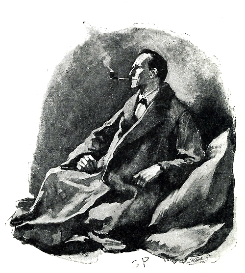
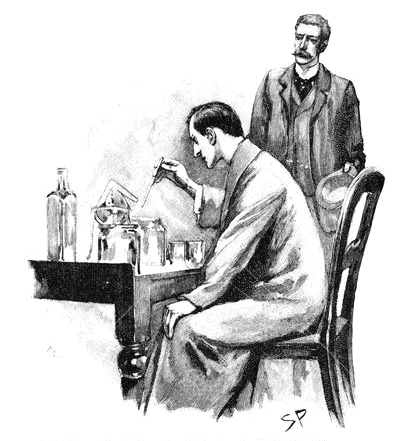
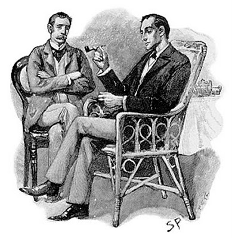
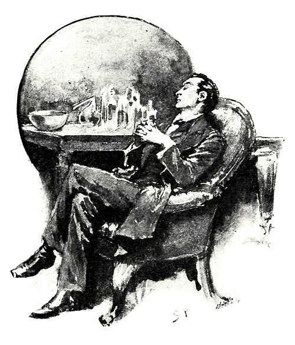

My name is Sherlock Holmes. It is my business to know what other people don't know. The Adventure of the Blue Carbuncle, Strand Magazine, January 1892
Sherlock Holmes is a fictional character created by Scottish author and physician Sir Arthur Conan Doyle, a graduate of the University of Edinburgh Medical School. A London-based consulting detective whose abilities border on the fantastic, Holmes is known for his astute logical reasoning, his ability to adopt almost any disguise and his use of forensic science to solve difficult cases.
Holmes, who first appeared in print in 1887, was featured in four novels and 56 short stories. The first novel, A Study in Scarlet, appeared in Beeton's Christmas Annual in 1887 and the second, The Sign of the Four, in Lippincott's Monthly Magazine in 1890. The character's popularity grew with the first series of short stories in The Strand Magazine, beginning with A Scandal in Bohemia in 1891; additional short-story series and two novels (published in serial form) appeared from then to 1927. The events in the stories take place from about 1880 to 1914.
All but four stories are narrated by Holmes's friend and biographer, Dr. John H. Watson. Two are narrated by Holmes himself (The Adventure of the Blanched Soldier and The Adventure of the Lion's Mane), and two others are written in the third person (The Adventure of the Mazarin Stone and His Last Bow). In two stories (The Adventure of the Musgrave Ritual and The Adventure of the Gloria Scott), Holmes tells Watson the story from memory, with Watson narrating the frame story. The first and fourth novels, A Study in Scarlet and The Valley of Fear, include long passages of omniscient narrative of events unknown to either Holmes or Watson.
Biography
Details about Sherlock Holmes's life, except for the adventures in the books, are scarce in Conan Doyle's original stories. Nevertheless, mentions of his early life and extended family paint a loose biographical picture of the detective.
An estimate of Holmes' age in His Last Bow places his birth year at 1854; the story, set in August 1914, describes him as 60 years of age. Leslie S. Klinger, author of The New Annotated Sherlock Holmes, posits the detective's birthdate as 6 January.
Holmes says that he first developed his methods of deduction as an undergraduate; his earliest cases, which he pursued as an amateur, came from fellow university students. A meeting with a classmate's father led him to adopt detection as a profession, and he spent six years after university as a consultant before financial difficulties led him to accept John H. Watson as a fellow lodger (when the narrative of the stories begins).
Beginning in 1881 Holmes has lodgings at 221B Baker Street, London. According to an early story 221B is an apartment at the upper end of the street, up 17 steps. Until Watson's arrival Holmes worked alone, only occasionally employing agents from the city's underclass; these agents included a host of informants, and a group of street children he called the Baker Street Irregulars. The Irregulars appear in three stories: A Study in Scarlet, The Sign of the Four and The Adventure of the Crooked Man.
His parents are not mentioned in the stories, although Holmes mentions that his ancestors were country squires. In The Adventure of the Greek Interpreter, he claims that his great-uncle was French artist Horace Vernet. Holmes' brother Mycroft, seven years his senior, is a government official who appears in The Adventure of the Greek Interpreter, The Final Problem and The Adventure of the Bruce-Partington Plans and is mentioned in The Adventure of the Empty House. Mycroft has a unique civil service position as a kind of human database for all aspects of government policy. He lacks Sherlock's interest in physical investigation, however, preferring to spend his time at the Diogenes Club.
Holmes works as a detective for 23 years, with physician John Watson assisting him for 17. They were roommates before Watson's 1887 marriage and again after his wife's death. Their residence is maintained by their landlady, Mrs. Hudson. Most of the stories are frame narratives, written from Watson's point of view as summaries of the detective's most interesting cases. Holmes frequently calls Watson's writing sensational and populist, suggesting that it fails to accurately and objectively report the science of his craft:
Detection is, or ought to be, an exact science and should be treated in the same cold and unemotional manner. You have attempted to tinge it A Study in Scarlet with romanticism, which produces much the same effect as if you worked a love-story .... Some facts should be suppressed, or, at least, a just sense of proportion should be observed in treating them. The only point in the case which deserved mention was the curious analytical reasoning from effects to causes, by which I succeeded in unravelling it. Sherlock Holmes on John Watson's pamphlet, The Sign of the Four
Nevertheless, Holmes' friendship with Watson is his most significant relationship. When Watson is injured by a bullet, although the wound turns out to be quite superficial, Watson is moved by Holmes' reaction:
It was worth a wound; it was worth many wounds; to know the depth of loyalty and love which lay behind that cold mask. The clear, hard eyes were dimmed for a moment, and the firm lips were shaking. For the one and only time I caught a glimpse of a great heart as well as of a great brain. All my years of humble but single-minded service culminated in that moment of revelation.
Personality
Watson describes Holmes as bohemian in his habits and lifestyle. Described by Watson in The Hound of the Baskervilles as having a cat-like love of personal cleanliness, Holmes is an eccentric with no regard for contemporary standards of tidiness or good order. In The Adventure of the Musgrave Ritual, Watson says:
Although in his methods of thought he was the neatest and most methodical of mankind ... [he] keeps his cigars in the coal-scuttle, his tobacco in the toe end of a Persian slipper, and his unanswered correspondence transfixed by a jack-knife into the very centre of his wooden mantelpiece ... He had a horror of destroying documents .... Thus month after month his papers accumulated, until every corner of the room was stacked with bundles of manuscript which were on no account to be burned, and which could not be put away save by their owner.
In many of the stories, Holmes dives into an apparent mess to find an item most relevant to a mystery. The detective starves himself at times of intense intellectual activity, such as during The Adventure of the Norwood Builder —wherein, according to Watson:
[Holmes] had no breakfast for himself, for it was one of his peculiarities that in his more intense moments he would permit himself no food, and I have known him to presume upon his iron strength until he has fainted from pure inanition.
Although his chronicler does not consider Holmes's habitual use of a pipe (or his less frequent use of cigarettes and cigars) a vice per se, Watson, a physician, occasionally criticises the detective for creating a poisonous atmosphere of tobacco smoke. Holmes acknowledges Watson's disapproval in The Adventure of the Devil's Foot: "I think, Watson, that I shall resume that course of tobacco-poisoning which you have so often and so justly condemned".
His companion condones the detective's willingness to bend the truth (or break the law) on behalf of a client-lying to the police, concealing evidence or breaking into houses-when he feels it morally justifiable, but condemns Holmes's manipulation of innocent people in The Adventure of Charles Augustus Milverton.
The detective acts on behalf of the British government in matters of national security in a number of stories, and performs counter-intelligence work in His Last Bow (set on the eve of World War I). As shooting practice during a period of boredom, Holmes decorates the wall of his Baker Street lodgings with VR (Victoria Regina) in bullet-pocks from his pistol.
Holmes derives pleasure from baffling police inspectors with his deductions, and has supreme confidence - bordering on arrogance — in his intellectual abilities. The detective does not actively seek fame, however, and is usually content to let the police take public credit for his work. Police outside London ask Holmes for assistance if he is nearby, even during a vacation. Watson's stories and newspaper articles reveal Holmes's role in the cases, and he becomes well known as a detective; many clients ask for his help instead of (or in addition to) that of the police. These include government officials and royalty. A Prime Minister and the King of Bohemia visit 221B Baker Street to request Holmes' assistance; the government of France awards him its Legion of Honour for solving a case; Holmes declines a knighthood for services which may perhaps some day be described; the King of Scandinavia is a client; and he aids the Vatican at least twice.
Holmes is pleased when his skills are recognised, and responds to flattery. Although the detective is usually dispassionate and cold, during an investigation he is animated and excitable. He has a flair for showmanship, preparing elaborate traps to capture and expose a culprit (often to impress Watson or one of the Scotland Yard inspectors).
Except for that of Watson, Holmes avoids casual company; when Watson proposes visiting a friend's home for rest, Holmes only agrees after learning that "the establishment was a bachelor one, and that he would be allowed the fullest freedom". In The Adventure of the Gloria Scott he tells the doctor that during two years at college he made only one friend, Victor Trevor: "I was never a very sociable fellow, Watson, always rather fond of moping in my rooms and working out my own little methods of thought, so that I never mixed much with the men of my year; ... my line of study was quite distinct from that of the other fellows, so that we had no points of contact at all". The detective is similarly described by Stamford in A Study in Scarlet.
Holmes relaxes with music in The Red-Headed League, taking the evening off from a case to listen to Pablo de Sarasate play violin. His enjoyment of vocal music, particularly Wagner's, is evident in The Adventure of the Red Circle.
The Art of Deduction
Holmes's primary intellectual detection method is abductive reasoning. "From a drop of water", he writes, "a logician could infer the possibility of an Atlantic or a Niagara without having seen or heard of one or the other". Holmesian deduction consists primarily of observation-based inferences, such as his study of cigar ashes. The detective's guiding principle, as he says in chapter six ("Sherlock Holmes Gives a Demonstration") of The Sign of the Four and elsewhere in the stories, is: "When you have eliminated the impossible, whatever remains, however improbable, must be the truth". In A Scandal in Bohemia, Holmes deduces that Watson had gotten wet lately and had "a most clumsy and careless servant girl". When Watson asks how Holmes knows this, the detective answers:
It is simplicity itself .... My eyes tell me that on the inside of your left shoe, just where the firelight strikes it, the leather is scored by six almost parallel cuts. Obviously they have been caused by someone who has very carelessly scraped round the edges of the sole in order to remove crusted mud from it. Hence, you see, my double deduction that you had been out in vile weather, and that you had a particularly malignant boot-slitting specimen of the London slavey.
Deductive reasoning allows Holmes to learn a stranger's occupation, such as the retired Marine sergeant in A Study in Scarlet; the ship's-carpenter-turned-pawnbroker in The Red-Headed League, and the billiard-marker and retired artillery non-commissioned officer in The Adventure of the Greek Interpreter. By studying inanimate objects, he makes deductions about their owners (Watson's pocket watch in The Sign of the Four and a hat, pipe and walking stick in other stories).
However, Conan Doyle does not paint Holmes as infallible (a central theme of The Adventure of the Yellow Face). At the end of the story, a chastened Holmes tells his chronicler: "If it should ever strike you that I am getting a little over-confident in my powers, or giving less pains to a case than it deserves, kindly whisper 'Norbury' in my ear, and I shall be infinitely obliged to you".
Retirement
In His Last Bow, Holmes has retired to a small farm on the Sussex Downs. The move is not dated precisely, but can be presumed to predate 1904 (since it is referred to retrospectively in The Second Stain, first published that year). He has taken up beekeeping as his primary occupation, producing a Practical Handbook of Bee Culture, with some Observations upon the Segregation of the Queen. The story features Holmes and Watson coming out of retirement to aid the war effort. Only one other adventure, The Adventure of the Lion's Mane (narrated by Holmes), takes place during the detective's retirement. The details of his death are unknown.
Do you like this article? If so, share it!
Source : Wikipedia, the free encyclopedia | Illustrations : Sidney Paget